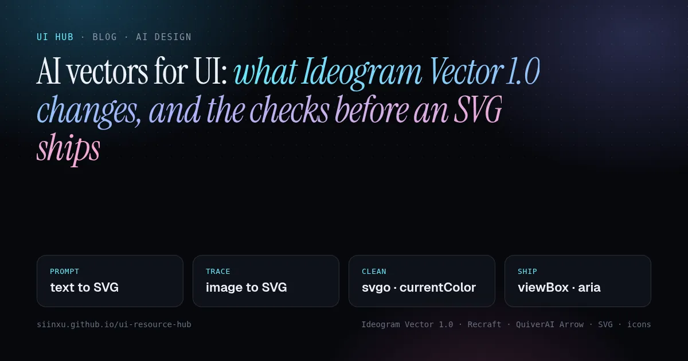
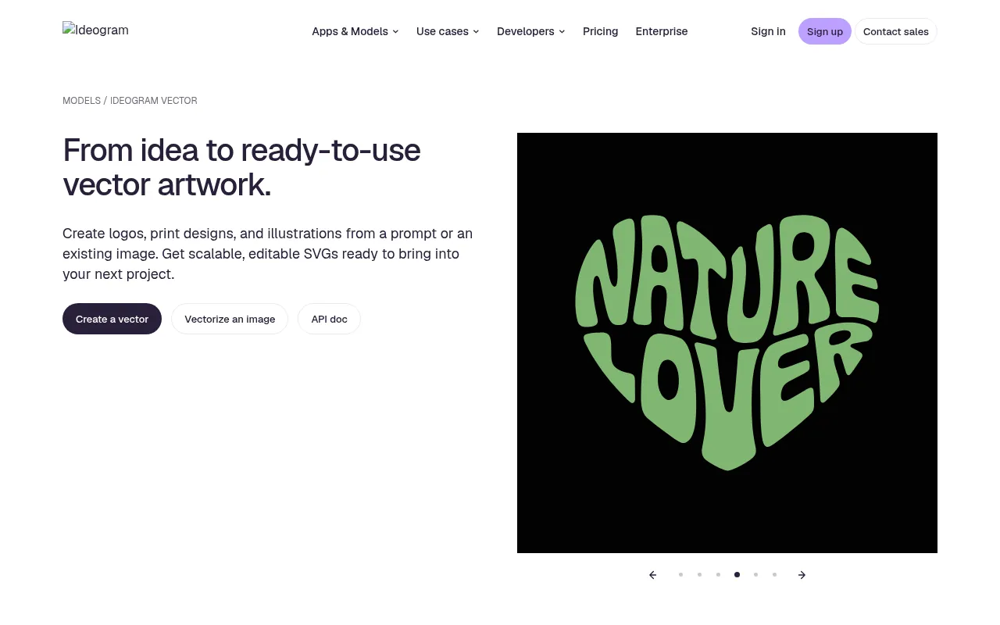
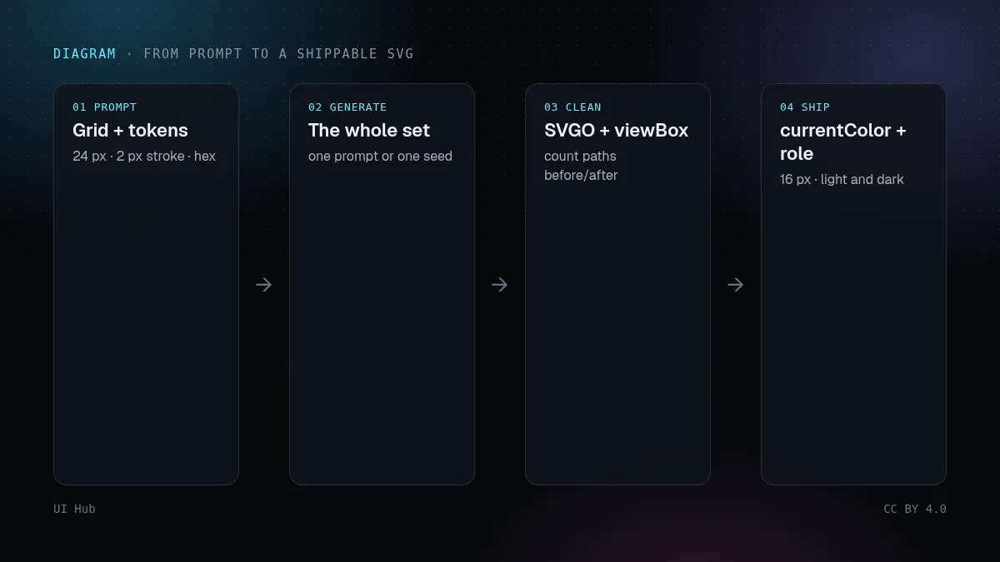
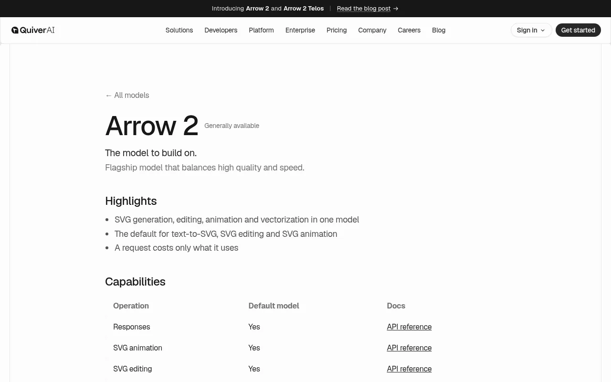

AI vectors for UI: what Ideogram Vector 1.0 changes, and the checks before an SVG shipsUIのためのAIベクター：Ideogram Vector 1.0で何が変わり、SVGを出す前に何を確認するかUI를 위한 AI 벡터: Ideogram Vector 1.0이 바꾼 것과 SVG 배포 전 점검할 것Vektor AI untuk UI: apa yang diubah Ideogram Vector 1.0, dan semakan sebelum SVG dihantarVector AI cho UI: Ideogram Vector 1.0 thay đổi gì và cần kiểm tra gì trước khi đưa SVG lênDes vecteurs IA pour l’UI : ce que change Ideogram Vector 1.0, et les vérifications avant de livrer un SVGVectores con IA para la UI: qué cambia Ideogram Vector 1.0 y qué revisar antes de publicar un SVGKI-Vektoren für UI: was Ideogram Vector 1.0 ändert und was vor dem Ausliefern einer SVG zu prüfen ist
On 22 October Ideogram shipped Vector 1.0, a model that writes editable SVG from a prompt or traces an image, joining Recraft V4.1 and QuiverAI Arrow 2. Editable is not the same as ready for an interface: what the three tools actually return, and a checklist for icons and illustrations.10月22日、IdeogramはVector 1.0を公開した。プロンプトから編集可能なSVGを生成し、画像をベクター化もできるモデルで、Recraft V4.1やQuiverAI Arrow 2に並ぶ。編集可能とUIにそのまま使えるは別物。3つのツールが実際に返すものと、アイコン・イラスト用チェックリスト。10월 22일 Ideogram이 Vector 1.0을 내놓았다. 프롬프트로 편집 가능한 SVG를 만들고 이미지를 벡터로 변환하는 모델로, Recraft V4.1·QuiverAI Arrow 2와 나란히 섰다. 편집 가능하다는 것과 UI에 바로 쓸 수 있다는 것은 다르다. 세 도구가 실제로 내놓는 것과 아이콘·일러스트 체크리스트.Pada 22 Okt, Ideogram melancarkan Vector 1.0, model yang menulis SVG boleh sunting daripada prompt atau menjejak imej, menyertai Recraft V4.1 dan QuiverAI Arrow 2. Boleh disunting tidak sama dengan sedia untuk antara muka: apa yang sebenarnya dihasilkan ketiga-tiga alat, dan senarai semak untuk ikon dan ilustrasi.Ngày 22/10, Ideogram ra mắt Vector 1.0, mô hình tạo SVG chỉnh sửa được từ prompt hoặc chuyển ảnh thành vector, đứng cạnh Recraft V4.1 và QuiverAI Arrow 2. Chỉnh sửa được chưa có nghĩa là dùng ngay trong giao diện: ba công cụ thực sự trả về gì, kèm checklist cho icon và minh hoạ.Le 22 octobre, Ideogram a lancé Vector 1.0, un modèle qui produit un SVG modifiable à partir d’un prompt ou vectorise une image, aux côtés de Recraft V4.1 et QuiverAI Arrow 2. Modifiable ne veut pas dire prêt pour une interface : ce que renvoient vraiment les trois outils, et une checklist pour icônes et illustrations.El 22 de octubre Ideogram lanzó Vector 1.0, un modelo que genera SVG editable a partir de un prompt o vectoriza una imagen, junto a Recraft V4.1 y QuiverAI Arrow 2. Editable no significa listo para una interfaz: qué devuelven de verdad las tres herramientas y una lista de revisión para iconos e ilustraciones.Am 22. Oktober brachte Ideogram Vector 1.0 heraus, ein Modell, das aus einem Prompt editierbare SVG erzeugt oder Bilder vektorisiert, neben Recraft V4.1 und QuiverAI Arrow 2. Editierbar heißt nicht fertig für eine Oberfläche: was die drei Tools wirklich liefern, plus Checkliste für Icons und Illustrationen.

本文は英語で表示しています。
본문은 영어로 표시됩니다.
Kandungan dipaparkan dalam bahasa Inggeris.
Nội dung hiển thị bằng tiếng Anh.
Le corps de l’article est en anglais.
El cuerpo del artículo está en inglés.
Der Beitragstext ist auf Englisch.
Most AI images reach an interface as a flat PNG: fine for a hero photo, useless for an icon that has to follow your theme colour, an empty-state illustration that must stay sharp on a 3x screen, or a logo you will resize forty times. On 22 October Ideogram launched Vector 1.0, its first model that returns SVG instead of pixels. It joins Recraft V4.1 and QuiverAI's Arrow 2, which already generate vectors. With three serious options, the question for UI work is no longer whether AI can draw a vector, but what it takes to make one ship.

What shipped, and what the three tools return
- Ideogram Vector 1.0 (22 October). Two jobs under one model: text-to-vector, with optional reference images, three quality levels and a seed, and image-to-vector, which traces a JPEG, PNG or WebP up to 50 MB. It runs in the Ideogram app, through the API, and on partner platforms such as fal from day one. Ideogram pitches it for logos, wordmarks, print, labels, stickers and illustrations, and says each shape arrives as its own element you can recolour, move or resize. API prices on the product page run from $0.13 to $0.20 per SVG by quality ($0.32 at high quality with references) and $0.10 per image-to-vector conversion. One caveat from an early reading of the API reference: the vectorizer's layer-grouping option is listed as not yet available, so a traced image comes back as paths rather than neatly named groups. Its two modes trade fidelity against shape count: default keeps fine detail, simple draws fewer, cleaner shapes.
- Recraft V4.1. Generates SVG from a prompt for logos, icons and illustrations, converts raster images, and has a vector editor in Recraft Studio where you can move points, add tangents and recolour without leaving the canvas. Its docs note that the vector generation type does not take reference images.
- QuiverAI Arrow 2. A generally available model that does SVG generation, vectorization, editing and animation in one place, priced per token ($4 input and $20 output per million), with a larger Arrow 2 Telos at 50% higher rates. A third-party guide to it recommends prompts that name hex colours and one outline weight, say the drawing must read at 32 px, and rule out gradients, text and shadows, and notes that it is not meant for photographs.

The same day, Canva released Craft, its first image model, which writes a plan of the composition before rendering and uses that plan to turn images into editable layers. It still outputs pixels, but it points the same way: generated visuals are starting to arrive as structure you can edit, not a picture you have to redraw.
Our take
For interfaces, editable is necessary but not enough. An icon that works in a product is a contract: a fixed grid (usually 24 by 24), one stroke weight across the set, colour taken from the surrounding text so it follows light and dark themes, a small file, and a clear role for screen readers. Generators optimise for a picture that looks good at full size. Nothing in the launches suggests they target those rules, so treat their output like a strong first draft from an illustrator who has never seen your icon set. The biggest win is in the middle of the range: empty states, onboarding spots, marketing illustrations and logo exploration, where a vector you can recolour to your tokens beats a PNG you cannot. For the core icon set, a maintained open library is still the safer default, with AI filling the gaps it does not cover.
Two practical warnings. Traced artwork can carry thousands of anchor points, which bloats pages and makes hand edits painful, so prefer the simple mode or a fresh generation for UI assets. And check the licence and output privacy for your plan before you put a generated mark into a product; Ideogram's docs say outputs are private by default, but terms differ between tools and tiers.
Checklist: getting an AI SVG ready for an interface
- Prompt for the system, not the picture. Give the grid size, stroke weight, cap style, fill or no fill, the exact hex values from your tokens, and the smallest size it must read at. Ban gradients, text and shadows for icons.
- Generate the set together. Ask for several icons in one prompt, or reuse the seed and a reference, so weights and corner radii match. Mixed weights are the first thing users notice.
- Prefer generation over tracing for UI. Trace only when you must keep an existing drawing, and use the simplest mode that still looks right.
- Clean the file. Run it through an optimizer such as SVGO, keep the
viewBox, drop editor metadata, and look at the path count before and after. - Hand colour to CSS. For single-colour icons, replace fixed fills and strokes with
currentColorso the icon follows text colour in both themes. For multicolour illustrations, map each colour to a CSS variable from your tokens. - Give it the right role. Decorative icons next to a text label get
aria-hidden="true"; a standalone meaningful graphic getsrole="img"and a<title>or an accessible name on its button. - Check it small and in both themes. View it at 16 and 24 px on light and dark backgrounds before you merge. If it only works large, it is an illustration, not an icon.
# 1. prompt for a UI icon, not a poster
"Six 24 px line icons for a finance app: wallet, card,
receipt, chart, bell, lock. 2 px stroke, round caps,
no fill, one colour #111827, no text, no gradients.
Each must read at 16 px."
# 2. clean the file
npx svgo wallet.svg -o wallet.min.svg
# 3. let CSS own the colour and the role
<svg viewBox="0 0 24 24" fill="none"
stroke="currentColor" aria-hidden="true">…</svg>
How UI Hub helps
A generated vector only fits if your tokens exist first. Our posts on design tokens for agents and OKLCH colour and dark mode cover the colour side, and layers, brand kits and JSON covers the same "editable, not flat" shift for raster images. For accessible names and roles, see accessibility in AI-generated UI.
Most AI images reach an interface as a flat PNG: fine for a hero photo, useless for an icon that has to follow your theme colour, an empty-state illustration that must stay sharp on a 3x screen, or a logo you will resize forty times. On 22 October Ideogram launched Vector 1.0, its first model that returns SVG instead of pixels. It joins Recraft V4.1 and QuiverAI's Arrow 2, which already generate vectors. With three serious options, the question for UI work is no longer whether AI can draw a vector, but what it takes to make one ship.
What shipped, and what the three tools return
- Ideogram Vector 1.0 (22 October). Two jobs under one model: text-to-vector, with optional reference images, three quality levels and a seed, and image-to-vector, which traces a JPEG, PNG or WebP up to 50 MB. It runs in the Ideogram app, through the API, and on partner platforms such as fal from day one. Ideogram pitches it for logos, wordmarks, print, labels, stickers and illustrations, and says each shape arrives as its own element you can recolour, move or resize. API prices on the product page run from $0.13 to $0.20 per SVG by quality ($0.32 at high quality with references) and $0.10 per image-to-vector conversion. One caveat from an early reading of the API reference: the vectorizer's layer-grouping option is listed as not yet available, so a traced image comes back as paths rather than neatly named groups. Its two modes trade fidelity against shape count: default keeps fine detail, simple draws fewer, cleaner shapes.
- Recraft V4.1. Generates SVG from a prompt for logos, icons and illustrations, converts raster images, and has a vector editor in Recraft Studio where you can move points, add tangents and recolour without leaving the canvas. Its docs note that the vector generation type does not take reference images.
- QuiverAI Arrow 2. A generally available model that does SVG generation, vectorization, editing and animation in one place, priced per token ($4 input and $20 output per million), with a larger Arrow 2 Telos at 50% higher rates. A third-party guide to it recommends prompts that name hex colours and one outline weight, say the drawing must read at 32 px, and rule out gradients, text and shadows, and notes that it is not meant for photographs.
The same day, Canva released Craft, its first image model, which writes a plan of the composition before rendering and uses that plan to turn images into editable layers. It still outputs pixels, but it points the same way: generated visuals are starting to arrive as structure you can edit, not a picture you have to redraw.
Our take
For interfaces, editable is necessary but not enough. An icon that works in a product is a contract: a fixed grid (usually 24 by 24), one stroke weight across the set, colour taken from the surrounding text so it follows light and dark themes, a small file, and a clear role for screen readers. Generators optimise for a picture that looks good at full size. Nothing in the launches suggests they target those rules, so treat their output like a strong first draft from an illustrator who has never seen your icon set. The biggest win is in the middle of the range: empty states, onboarding spots, marketing illustrations and logo exploration, where a vector you can recolour to your tokens beats a PNG you cannot. For the core icon set, a maintained open library is still the safer default, with AI filling the gaps it does not cover.
Two practical warnings. Traced artwork can carry thousands of anchor points, which bloats pages and makes hand edits painful, so prefer the simple mode or a fresh generation for UI assets. And check the licence and output privacy for your plan before you put a generated mark into a product; Ideogram's docs say outputs are private by default, but terms differ between tools and tiers.
Checklist: getting an AI SVG ready for an interface
- Prompt for the system, not the picture. Give the grid size, stroke weight, cap style, fill or no fill, the exact hex values from your tokens, and the smallest size it must read at. Ban gradients, text and shadows for icons.
- Generate the set together. Ask for several icons in one prompt, or reuse the seed and a reference, so weights and corner radii match. Mixed weights are the first thing users notice.
- Prefer generation over tracing for UI. Trace only when you must keep an existing drawing, and use the simplest mode that still looks right.
- Clean the file. Run it through an optimizer such as SVGO, keep the
viewBox, drop editor metadata, and look at the path count before and after. - Hand colour to CSS. For single-colour icons, replace fixed fills and strokes with
currentColorso the icon follows text colour in both themes. For multicolour illustrations, map each colour to a CSS variable from your tokens. - Give it the right role. Decorative icons next to a text label get
aria-hidden="true"; a standalone meaningful graphic getsrole="img"and a<title>or an accessible name on its button. - Check it small and in both themes. View it at 16 and 24 px on light and dark backgrounds before you merge. If it only works large, it is an illustration, not an icon.
# 1. prompt for a UI icon, not a poster
"Six 24 px line icons for a finance app: wallet, card,
receipt, chart, bell, lock. 2 px stroke, round caps,
no fill, one colour #111827, no text, no gradients.
Each must read at 16 px."
# 2. clean the file
npx svgo wallet.svg -o wallet.min.svg
# 3. let CSS own the colour and the role
<svg viewBox="0 0 24 24" fill="none"
stroke="currentColor" aria-hidden="true">…</svg>How UI Hub helps
A generated vector only fits if your tokens exist first. Our posts on design tokens for agents and OKLCH colour and dark mode cover the colour side, and layers, brand kits and JSON covers the same "editable, not flat" shift for raster images. For accessible names and roles, see accessibility in AI-generated UI.
AI promptAIプロンプトAI 프롬프트Prompt AIPrompt cho AIPrompt IAPrompt de IAKI-Prompt
Paste this into Claude, Cursor, v0 or another assistant to apply this post to your own project. Replace the parts in angle brackets.Claude・Cursor・v0 などのAIアシスタントに貼り付けると、この記事の方法をあなたのプロジェクトに適用できます。山括弧の部分は自分の内容に置き換えてください。Claude, Cursor, v0 같은 AI 도우미에 붙여 넣으면 이 글의 방법을 내 프로젝트에 적용할 수 있습니다. 꺾쇠괄호 안은 내 내용으로 바꾸세요.Tampal ke Claude, Cursor, v0 atau pembantu lain untuk menggunakan kaedah artikel ini pada projek anda. Gantikan bahagian dalam kurungan sudut.Dán vào Claude, Cursor, v0 hoặc trợ lý khác để áp dụng bài này cho dự án của bạn. Thay phần trong dấu ngoặc nhọn bằng nội dung của bạn.Collez-le dans Claude, Cursor, v0 ou un autre assistant pour appliquer cet article à votre projet. Remplacez les parties entre chevrons.Pégalo en Claude, Cursor, v0 u otro asistente para aplicar este artículo a tu proyecto. Sustituye lo que está entre corchetes angulares.In Claude, Cursor, v0 oder einen anderen Assistenten einfügen, um diesen Beitrag auf dein Projekt anzuwenden. Teile in spitzen Klammern ersetzen.
You are a senior UI engineer. Apply the article “AI vectors for UI: what Ideogram Vector 1.0 changes, and the checks before an SVG ships” (https://ui.incidental.site/blog/ai-svg-for-ui-ideogram-vector/) to my project.
Key idea: On 22 October Ideogram shipped Vector 1.0, a model that writes editable SVG from a prompt or traces an image, joining Recraft V4.1 and QuiverAI Arrow 2. Editable is not the same as ready for an interface: what the three tools actually return, and a checklist for icons and illustrations.
Steps:
1. Read the article and turn its advice into a numbered checklist of concrete, checkable rules.
2. Audit <my page / component / repo> against that checklist; mark each rule PASS or FAIL with file and line.
3. Fix the FAIL items in small batches, using my existing tokens and components. Do not invent APIs; follow the official docs the article links to.
4. Finish with a short list of open questions and anything you could not verify.あなたはシニアUIエンジニアです。記事「UIのためのAIベクター：Ideogram Vector 1.0で何が変わり、SVGを出す前に何を確認するか」（https://ui.incidental.site/blog/ai-svg-for-ui-ideogram-vector/）の方法を私のプロジェクトに適用してください。
要点：10月22日、IdeogramはVector 1.0を公開した。プロンプトから編集可能なSVGを生成し、画像をベクター化もできるモデルで、Recraft V4.1やQuiverAI Arrow 2に並ぶ。編集可能とUIにそのまま使えるは別物。3つのツールが実際に返すものと、アイコン・イラスト用チェックリスト。
手順：
1. 記事を読み、助言を具体的で確認可能な番号付きチェックリストにする。
2. そのチェックリストで <私のページ / コンポーネント / リポジトリ> を監査し、各項目を合格／不合格で示し、ファイルと行番号を書く。
3. 不合格の項目を、既存のトークンとコンポーネントを使って少しずつ修正する。APIを捏造せず、記事がリンクする公式ドキュメントに従う。
4. 最後に未解決の質問と検証できなかった点を挙げる。당신은 시니어 UI 엔지니어입니다. 글 “UI를 위한 AI 벡터: Ideogram Vector 1.0이 바꾼 것과 SVG 배포 전 점검할 것”(https://ui.incidental.site/blog/ai-svg-for-ui-ideogram-vector/)의 방법을 내 프로젝트에 적용해 주세요.
핵심: 10월 22일 Ideogram이 Vector 1.0을 내놓았다. 프롬프트로 편집 가능한 SVG를 만들고 이미지를 벡터로 변환하는 모델로, Recraft V4.1·QuiverAI Arrow 2와 나란히 섰다. 편집 가능하다는 것과 UI에 바로 쓸 수 있다는 것은 다르다. 세 도구가 실제로 내놓는 것과 아이콘·일러스트 체크리스트.
단계:
1. 글을 읽고 조언을 구체적이고 확인 가능한 번호 목록으로 정리한다.
2. 그 목록으로 <내 페이지 / 컴포넌트 / 저장소>를 점검하고, 항목마다 통과/실패와 파일·줄 번호를 적는다.
3. 실패 항목을 기존 토큰과 컴포넌트로 조금씩 고친다. API를 지어내지 말고 글에 링크된 공식 문서를 따른다.
4. 마지막으로 남은 질문과 확인하지 못한 내용을 정리한다.Anda jurutera UI kanan. Gunakan kaedah artikel “Vektor AI untuk UI: apa yang diubah Ideogram Vector 1.0, dan semakan sebelum SVG dihantar” (https://ui.incidental.site/blog/ai-svg-for-ui-ideogram-vector/) pada projek saya.
Idea utama: Pada 22 Okt, Ideogram melancarkan Vector 1.0, model yang menulis SVG boleh sunting daripada prompt atau menjejak imej, menyertai Recraft V4.1 dan QuiverAI Arrow 2. Boleh disunting tidak sama dengan sedia untuk antara muka: apa yang sebenarnya dihasilkan ketiga-tiga alat, dan senarai semak untuk ikon dan ilustrasi.
Langkah:
1. Baca artikel dan jadikan nasihatnya senarai semak bernombor yang konkrit dan boleh disemak.
2. Audit <halaman / komponen / repo saya> dengan senarai itu; tandakan setiap peraturan LULUS atau GAGAL dengan fail dan baris.
3. Baiki item GAGAL sedikit demi sedikit menggunakan token dan komponen sedia ada. Jangan reka API; ikut dokumen rasmi yang dipautkan artikel.
4. Akhiri dengan soalan terbuka dan perkara yang tidak dapat disahkan.Bạn là kỹ sư UI cấp cao. Hãy áp dụng bài viết “Vector AI cho UI: Ideogram Vector 1.0 thay đổi gì và cần kiểm tra gì trước khi đưa SVG lên” (https://ui.incidental.site/blog/ai-svg-for-ui-ideogram-vector/) cho dự án của tôi.
Ý chính: Ngày 22/10, Ideogram ra mắt Vector 1.0, mô hình tạo SVG chỉnh sửa được từ prompt hoặc chuyển ảnh thành vector, đứng cạnh Recraft V4.1 và QuiverAI Arrow 2. Chỉnh sửa được chưa có nghĩa là dùng ngay trong giao diện: ba công cụ thực sự trả về gì, kèm checklist cho icon và minh hoạ.
Các bước:
1. Đọc bài và biến lời khuyên thành danh sách kiểm tra đánh số, cụ thể, kiểm chứng được.
2. Rà soát <trang / component / repo của tôi> theo danh sách đó; ghi ĐẠT hoặc KHÔNG ĐẠT kèm tệp và dòng.
3. Sửa các mục KHÔNG ĐẠT theo từng đợt nhỏ, dùng token và component sẵn có. Không bịa API; làm theo tài liệu chính thức mà bài viết dẫn tới.
4. Kết thúc bằng các câu hỏi còn mở và những điểm chưa xác minh được.Tu es ingénieur UI senior. Applique l’article « Des vecteurs IA pour l’UI : ce que change Ideogram Vector 1.0, et les vérifications avant de livrer un SVG » (https://ui.incidental.site/blog/ai-svg-for-ui-ideogram-vector/) à mon projet.
Idée clé : Le 22 octobre, Ideogram a lancé Vector 1.0, un modèle qui produit un SVG modifiable à partir d’un prompt ou vectorise une image, aux côtés de Recraft V4.1 et QuiverAI Arrow 2. Modifiable ne veut pas dire prêt pour une interface : ce que renvoient vraiment les trois outils, et une checklist pour icônes et illustrations.
Étapes :
1. Lis l’article et transforme ses conseils en une liste numérotée de règles concrètes et vérifiables.
2. Audite <ma page / mon composant / mon dépôt> avec cette liste ; indique OK ou KO pour chaque règle, avec fichier et ligne.
3. Corrige les points KO par petits lots, avec mes tokens et composants existants. N’invente pas d’API ; suis la documentation officielle citée par l’article.
4. Termine par les questions ouvertes et ce que tu n’as pas pu vérifier.Eres un ingeniero de UI sénior. Aplica el artículo “Vectores con IA para la UI: qué cambia Ideogram Vector 1.0 y qué revisar antes de publicar un SVG” (https://ui.incidental.site/blog/ai-svg-for-ui-ideogram-vector/) a mi proyecto.
Idea clave: El 22 de octubre Ideogram lanzó Vector 1.0, un modelo que genera SVG editable a partir de un prompt o vectoriza una imagen, junto a Recraft V4.1 y QuiverAI Arrow 2. Editable no significa listo para una interfaz: qué devuelven de verdad las tres herramientas y una lista de revisión para iconos e ilustraciones.
Pasos:
1. Lee el artículo y convierte sus consejos en una lista numerada de reglas concretas y comprobables.
2. Audita <mi página / componente / repositorio> con esa lista; marca cada regla como CUMPLE o NO CUMPLE con archivo y línea.
3. Corrige los puntos que no cumplen en lotes pequeños, usando mis tokens y componentes actuales. No inventes APIs; sigue la documentación oficial que enlaza el artículo.
4. Termina con las preguntas abiertas y lo que no pudiste verificar.Du bist Senior-UI-Engineer. Wende den Artikel „KI-Vektoren für UI: was Ideogram Vector 1.0 ändert und was vor dem Ausliefern einer SVG zu prüfen ist“ (https://ui.incidental.site/blog/ai-svg-for-ui-ideogram-vector/) auf mein Projekt an.
Kernidee: Am 22. Oktober brachte Ideogram Vector 1.0 heraus, ein Modell, das aus einem Prompt editierbare SVG erzeugt oder Bilder vektorisiert, neben Recraft V4.1 und QuiverAI Arrow 2. Editierbar heißt nicht fertig für eine Oberfläche: was die drei Tools wirklich liefern, plus Checkliste für Icons und Illustrationen.
Schritte:
1. Lies den Artikel und mach aus den Empfehlungen eine nummerierte Liste konkreter, prüfbarer Regeln.
2. Prüfe <meine Seite / Komponente / mein Repo> anhand dieser Liste; markiere jede Regel mit OK oder FEHLT, mit Datei und Zeile.
3. Behebe die fehlenden Punkte in kleinen Schritten mit meinen vorhandenen Tokens und Komponenten. Erfinde keine APIs; folge der offiziellen Doku, die der Artikel verlinkt.
4. Schließe mit offenen Fragen und dem, was du nicht prüfen konntest.References参考文献참고 자료RujukanNguồn tham khảoRéférencesReferenciasQuellen
- Ideogram Vector: ready-to-use SVG artwork — Ideogram
- Ideogram launches its first vector model for editable SVG design — Ryan Merket, Runtime Wire
- Ideogram Vector 1.0: Editable SVGs with an API layer caveat — OrcaRouter blog
- Ideogram Vector 1.0: Editable SVGs from a prompt — ArtRealmAI
- Ideogram Vector text-to-vector API — fal
- AI vector generator: text to SVG — Recraft
- Vector Editor — Recraft docs
- Arrow 2 — QuiverAI
- Models — QuiverAI docs
- Arrow — Batch Banana docs
- Introducing Canva Craft — Canva Newsroom
- Canva releases its first image generation model — Ivan Mehta, TechCrunch
- SVGO — SVGO
- Decorative images — W3C WAI
Related posts関連記事관련 글Artikel berkaitanBài liên quanArticles liésArtículos relacionadosÄhnliche Beiträge

v0 in practice: from a prompt to shadcn code you can keepv0実践：プロンプトから残せるshadcnコードへv0 실전: 프롬프트에서 남길 수 있는 shadcn 코드까지v0 secara praktikal: dari prompt ke kod shadcn yang boleh disimpanv0 thực chiến: từ một prompt đến mã shadcn giữ lại đượcv0 en pratique : d'un prompt à du code shadcn qu'on gardev0 en la práctica: de un prompt a código shadcn que puedes conservarv0 in der Praxis: vom Prompt zu shadcn-Code, den man behält
v0 is strongest when you treat it as a shadcn/Tailwind code generator, not a design oracle. Brief it like an engineer, then pull the code into your repo.v0はデザインの神託ではなくshadcn/Tailwindのコード生成器として使うと最強。エンジニア向けに指示し、コードを自分のリポジトリへ。v0는 디자인 신탁이 아니라 shadcn/Tailwind 코드 생성기로 쓸 때 가장 강하다. 엔지니어에게 하듯 지시하고 코드를 저장소로 가져오자.v0 paling kuat sebagai penjana kod shadcn/Tailwind. Beri arahan seperti kepada jurutera, kemudian bawa kod ke repo anda.v0 mạnh nhất khi coi là trình sinh mã shadcn/Tailwind. Viết yêu cầu như cho kỹ sư rồi kéo mã về repo.v0 brille comme générateur de code shadcn/Tailwind. Briefez-le comme un ingénieur puis rapatriez le code.v0 rinde mejor como generador de código shadcn/Tailwind. Instrúyelo como a un ingeniero y lleva el código a tu repo.v0 glänzt als shadcn/Tailwind-Codegenerator. Briefen Sie es wie einen Engineer und holen Sie den Code ins Repo.

Lovable and Bolt: when prompt-to-UI becomes prompt-to-appLovableとBolt：プロンプトからUIがアプリになるときLovable과 Bolt: 프롬프트-UI가 프롬프트-앱이 될 때Lovable dan Bolt: apabila prompt-ke-UI menjadi prompt-ke-aplLovable và Bolt: khi prompt-to-UI thành prompt-to-appLovable et Bolt : quand le prompt-to-UI devient prompt-to-appLovable y Bolt: cuando prompt-to-UI se vuelve prompt-to-appLovable und Bolt: wenn Prompt-to-UI zu Prompt-to-App wird
Both tools build whole apps, so design quality now competes with data, auth and deploys for attention. How to keep the look from being an afterthought.どちらもアプリ全体を作るため、デザイン品質はデータや認証と注意を奪い合う。見た目を後回しにしない方法。둘 다 앱 전체를 만들기에 디자인 품질이 데이터·인증·배포와 경쟁한다. 외관을 뒷전으로 두지 않는 법.Kedua-duanya membina apl penuh; reka bentuk bersaing dengan data dan auth. Cara elak visual jadi hal kemudian.Cả hai dựng app hoàn chỉnh nên thiết kế phải tranh chú ý với dữ liệu, đăng nhập. Cách để giao diện không bị bỏ quên.Les deux construisent des apps entières : le design rivalise avec données et auth. Comment ne pas le reléguer.Ambos construyen apps completas: el diseño compite con datos y auth. Cómo evitar que quede para después.Beide bauen ganze Apps – Design konkurriert mit Daten und Auth. So bleibt die Optik keine Nebensache.

Figma Make and the Figma agent: AI moves onto the canvasFigma MakeとFigmaエージェント：AIがキャンバスへFigma Make와 Figma 에이전트: AI가 캔버스로Figma Make dan ejen Figma: AI pindah ke kanvasFigma Make và agent của Figma: AI lên canvasFigma Make et l'agent Figma : l'IA arrive sur le canevasFigma Make y el agente de Figma: la IA llega al lienzoFigma Make und der Figma-Agent: KI zieht auf die Canvas
Figma Make turns prompts into working prototypes; the Figma agent, generally available since 6 Oct 2026, reads team guideline files. Why the guideline file matters most.Figma Makeはプロンプトを動くプロトタイプに。2026/10/6 GAのエージェントはガイドラインを読む。肝はガイドライン。Figma Make는 프롬프트를 프로토타입으로, 2026-10-06 정식 출시된 에이전트는 가이드라인 파일을 읽는다.Figma Make jadikan prompt prototaip; ejen Figma (GA 6 Okt 2026) membaca fail garis panduan pasukan.Figma Make biến prompt thành prototype; agent Figma (GA 6/10/2026) đọc file hướng dẫn của nhóm.Figma Make transforme des prompts en prototypes ; l'agent (GA le 6/10/2026) lit les guides d'équipe.Figma Make convierte prompts en prototipos; el agente (GA 6/10/2026) lee las guías del equipo.Figma Make macht Prompts zu Prototypen; der Agent (GA 6.10.2026) liest Team-Guidelines.